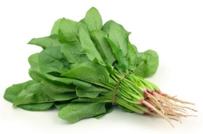

Copper fungicide spray
Treats powdery mildew and common leaf blights.
Rs. 850
Computer vision · Irrigation intelligence · Precision agriculture
AgriGuardian AI reads a photo of a leaf the way an agronomist would — naming the disease, scoring how confident it is, and marking exactly where the damage sits. Then it feeds that finding straight into your irrigation schedule, so watering never makes an outbreak worse.
Detected · moderate
Powdery mildew
94.2% confidence
Affected area outlined automatically — no manual cropping needed.
AgriGuardian AI exists to close two gaps at once — the gap between noticing a problem and knowing what to do about it, and the gap between a healthy harvest and the people who eat it. We put diagnosis, treatment, and irrigation guidance in a farmer's pocket, then carry that same data forward so a shopper can see exactly what went into what they're buying.
Protect the crop
Catch disease while it's still cheap to treat.
Conserve the water
Irrigate on evidence, not habit or guesswork.
Connect the harvest
Let the people eating it see how it was grown.
A yellowing leaf could mean disease, a nutrient deficiency, or a watering problem. Farmers rarely get a clean signal, and every day spent guessing is a day the problem gets worse. Watering incorrectly on top of that — too much, too little, or at the wrong time — compounds the damage and drags yield down further.
01
Disease or deficiency?
The same discoloration can point to a fungus or a missing nutrient — and the treatments don't overlap.
02
Too much or too little water?
Irrigation decisions are often made on habit, not on soil moisture, forecast, or growth stage.
03
By the time it's visible, it's spreading.
Most outbreaks are already established in the surrounding crop before the first symptom is caught.
Treats powdery mildew and common leaf blights.

Feeds live readings straight into your watering schedule.

Covers one bigha; expands with add-on tubing.

Early-stage pest and mildew control, chemical-free.

Bhandari Farm . 0 fungicide treatmens this season

Greenfield Farm . Harvested this week
Rai Family Farm . Irrigation-optimized
Upload a photo of any leaf. The model returns a full read-out, not just a label.
Combines six live inputs to answer one question: water now, or wait?
Output: when to irrigate and how much — tuned to save water without under-watering the crop.
A detection doesn't just sit in a report — it changes what the irrigation advisor recommends next. If the disease engine flags powdery mildew, which thrives in humid conditions, the irrigation advisor automatically reduces watering frequency to bring humidity down and slow the spread.
Everything the two engines learn gets rolled up into five numbers a farmer can check in ten seconds.
Farm health score
82/100
▲ 3 vs last week
Disease risk
Moderate
Powdery mildew · Block 3
Water usage
−18%
vs. baseline this week
Weather alert
Rain · 36h
Irrigation paused Blocks 1–2
Recommended action
Hold irrigation on Block 3 for 2 days; treat mildew now.
Weather and environmental data — humidity trends, leaf-wetness duration, temperature swings — often signal an outbreak days before it's visible on a leaf. AgriGuardian AI tracks that climb and flags the risk early, so treatment can start before the disease has a foothold.
Risk climbs well ahead of visible onset — the window where preventive treatment is cheapest.
Satellite & drone view
Field-level visualization layered over the same risk data. (concept)
Multilingual voice assistant
Ask questions and get recommendations spoken back in the farmer's own language.
Offline mode
Detection still runs without signal; results sync once the connection returns.
Explainable AI
Every diagnosis comes with the reasoning behind it, not just a label.
Community disease alerts
When nearby farms report an outbreak, neighboring fields get an early warning.
Water-saving analytics
Track litres saved over time as irrigation gets tuned to real conditions.
Most tools stop at a label. AgriGuardian AI connects vision, weather, irrigation, and the shop into one loop — so a diagnosis actually changes what happens next, all the way to the harvest.
Detection and irrigation share one decision loop, not two separate apps.
Predicts outbreaks from environmental trends, before symptoms appear.
Turns every diagnosis into a one-tap purchase in the Farmers Shop — no guessing what to buy.
Carries farm health data forward so Consumer Shop buyers can see how their food was grown.
Step 01
Farmer uploads a leaf photo
A single image, taken on a phone in the field.
Step 02
AI detects the disease
Species, confidence score, and the affected region are identified.
Step 03
Dashboard shows severity and treatment
A clear recommendation, no field manual required.
Step 04
Weather forecast is checked
Upcoming rain, humidity, and temperature are pulled in automatically.
Step 05
Irrigation schedule is optimized
Adjusted for the diagnosis, the forecast, and the crop's growth stage.
Step 06
Water savings and reduced risk are displayed
The outcome of the whole loop, in numbers the farmer can trust.
I used to lose half a bed to blight before I even noticed it. Now I get a warning before the leaves turn.
Sunita K.
Vegetable farmer, Rupandehi
The irrigation advisor cut our water bill and our mildew problem in the same season.
Dilip R.
Orchard farmer, Palpa
I like knowing which farm my spinach came from, and that it wasn't overtreated.
Anita S.
Home cook, Kathmandu · Consumer Shop
Frontend
Backend
AI / computer vision
Data & auth
Weather & deployment